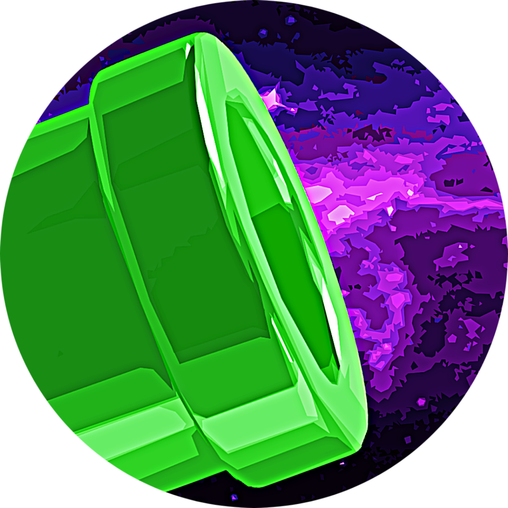

<header
    id="tunnerse-tunnel-header"
    class="tunnerse-expanded"
    style="
        position: fixed;
        top: 0;
        left: 50%;
        transform: translate(-50%, 12px);

        z-index: 2147483647;

        width: calc(100% - 32px);
        max-width: 850px;
        min-height: 50px;

        padding: 0 12px 0 16px;

        background: rgba(45, 10, 85, 0.4);

        backdrop-filter: blur(10px);
        -webkit-backdrop-filter: blur(10px);

        border: 1px solid rgba(255,255,255,0.1);
        border-radius: 999px;

        box-shadow: 0 8px 32px rgba(0,0,0,0.3);

        display: flex;
        align-items: center;

        font-family: Inter, system-ui, sans-serif;
        color: #ffffff;

        overflow: visible;

        opacity: 0;
        pointer-events: none;

        transition:
            transform .28s ease,
            opacity .25s ease;
    "
>
    <div
        id="tunnerse-content-wrapper"
        style="
            display:flex;
            align-items:center;
            width:100%;
            gap:12px;
        "
    >

        

        <div
            id="tunnerse-text-area"
            style="
                flex-grow:1;
                text-align:center;
                transition:opacity .2s;
            "
        >
            <span
                style="
                    display:block;
                    font-size:13px;
                    font-weight:500;
                    opacity:.9;
                    white-space:nowrap;
                "
            >
                Provided by <strong style="color:#a78bfa;"> Tunnerse</strong>
            </span>
        </div>

        <div
            id="tunnerse-github-area"
            style="
                display:flex;
                align-items:center;
                transition:opacity .2s;
            "
        >
            <a
                href="https://github.com/pedroborgesdev/tunnerse-api"
                target="_blank"
                onclick="event.stopPropagation()"
                style="
                    color:white;
                    display:flex;
                    opacity:.8;
                "
            >
                <svg
                    height="20"
                    viewBox="0 0 16 16"
                    width="20"
                    fill="currentColor"
                >
                    <path d="M8 0C3.58 0 0 3.58 0 8c0 3.54 2.29 6.53 5.47 7.59.4.07.55-.17.55-.38 0-.19-.01-.82-.01-1.49-2.01.37-2.53-.49-2.69-.94-.09-.23-.48-.94-.82-1.13-.28-.15-.68-.52-.01-.53.63-.01 1.08.58 1.23.82.72 1.21 1.87.87 2.33.66.07-.52.28-.87.51-1.07-1.78-.2-3.64-.89-3.64-3.95 0-.87.31-1.59.82-2.15-.08-.2-.36-1.02.08-2.12 0 0 .67-.21 2.2.82.64-.18 1.32-.27 2-.27.68 0 1.36.09 2 .27 1.53-1.04 2.2-.82 2.2-.82.44 1.1.16 1.92.08 2.12.51.56.82 1.27.82 2.15 0 3.07-1.87 3.75-3.65 3.95.29.25.54.73.54 1.48 0 1.07-.01 1.93-.01 2.2 0 .21.15.46.55.38A8.013 8.013 0 0016 8c0-4.42-3.58-8-8-8z"></path>
                </svg>
            </a>
        </div>

        <button
            id="tunnerse-collapse-button"
            type="button"
            aria-label="Suspend Tunnerse notice"
            title="Suspend notice"
            onclick="toggleTunnerseHeader()"
            style="
                width:32px;
                height:32px;

                border:0;
                border-radius:999px;

                background:rgba(255,255,255,0.12);

                color:#ffffff;

                display:flex;
                align-items:center;
                justify-content:center;

                cursor:pointer;

                flex-shrink:0;
                padding:0;
            "
        >
            <svg
                height="18"
                viewBox="0 0 24 24"
                width="18"
                fill="none"
                stroke="currentColor"
                stroke-width="2.4"
                stroke-linecap="round"
                stroke-linejoin="round"
            >
                <path d="m18 15-6-6-6 6"></path>
            </svg>
        </button>
    </div>

    <button
        id="tunnerse-show-button"
        type="button"
        aria-label="Show Tunnerse notice"
        title="Show notice"
        onclick="toggleTunnerseHeader()"
        style="
            position:absolute;

            left:50%;
            bottom:-28px;

            transform:translateX(-50%);

            width:54px;
            height:30px;

            border:1px solid rgba(255,255,255,0.1);
            border-top:0;

            border-radius:0 0 18px 18px;

            background:rgba(45,10,85,0.5);

            color:#ffffff;

            display:none;
            align-items:center;
            justify-content:center;

            cursor:pointer;
            padding:0;
        "
    >
        <svg
            height="18"
            viewBox="0 0 24 24"
            width="18"
            fill="none"
            stroke="currentColor"
            stroke-width="2.4"
            stroke-linecap="round"
            stroke-linejoin="round"
        >
            <path d="m6 9 6 6 6-6"></path>
        </svg>
    </button>

    <style>
        @keyframes tunnerseDropIn {
            from {
                transform: translate(-50%, -100%);
                opacity: 0;
            }

            to {
                transform: translate(-50%, 12px);
                opacity: 1;
            }
        }

        #tunnerse-tunnel-header.loaded {
            opacity: 1 !important;
            pointer-events: auto !important;
            animation: tunnerseDropIn .28s ease-out;
        }

        #tunnerse-tunnel-header.tunnerse-suspended {
            transform: translate(-50%, -50px) !important;
        }

        #tunnerse-tunnel-header.tunnerse-suspended
        #tunnerse-content-wrapper {
            opacity: 0;
            pointer-events: none;
        }

        #tunnerse-tunnel-header.tunnerse-suspended
        #tunnerse-show-button {
            display: flex !important;
            pointer-events: auto;
        }

        @media (max-width:600px) {

            #tunnerse-tunnel-header {
                width: calc(100% - 20px) !important;
                padding-left: 12px !important;
                padding-right: 8px !important;
                min-height: 44px !important;

                transform: translate(-50%, 8px);
            }

            #tunnerse-content-wrapper {
                gap: 8px !important;
            }

            #tunnerse-logo {
                width: 24px !important;
                height: 24px !important;
            }

            #tunnerse-text-area {
                min-width: 0;
            }

            #tunnerse-text-area span {
                display: block;
                font-size: 10px !important;
                line-height: 1.2;
                white-space: normal !important;
            }

            #tunnerse-github-area svg {
                width: 18px;
                height: 18px;
            }

            #tunnerse-collapse-button {
                width: 28px !important;
                height: 28px !important;
            }

            #tunnerse-collapse-button svg,
            #tunnerse-show-button svg {
                width: 16px !important;
                height: 16px !important;
            }

            #tunnerse-show-button {
                width: 48px !important;
                height: 26px !important;
                bottom: -24px !important;
            }

            #tunnerse-tunnel-header.tunnerse-suspended {
                transform: translate(-50%, -44px) !important;
            }
        }

        @media (max-width:380px) {

            #tunnerse-tunnel-header {
                width: calc(100% - 12px) !important;
                padding-left: 10px !important;
                padding-right: 6px !important;
            }

            #tunnerse-text-area span {
                font-size: 9px !important;
            }

            #tunnerse-github-area {
                display: none !important;
            }
        }
    </style>

    <script>
        function toggleTunnerseHeader() {
            const header =
                document.getElementById(
                    'tunnerse-tunnel-header'
                );

            if (
                header.classList.contains(
                    'tunnerse-expanded'
                )
            ) {
                header.classList.remove(
                    'tunnerse-expanded'
                );

                header.classList.add(
                    'tunnerse-suspended'
                );
            } else {
                header.classList.remove(
                    'tunnerse-suspended'
                );

                header.classList.add(
                    'tunnerse-expanded'
                );
            }
        }

        window.addEventListener(
            'load',
            () => {
                const header =
                    document.getElementById(
                        'tunnerse-tunnel-header'
                    );

                header.classList.add('loaded');
            }
        );
    </script>
</header>